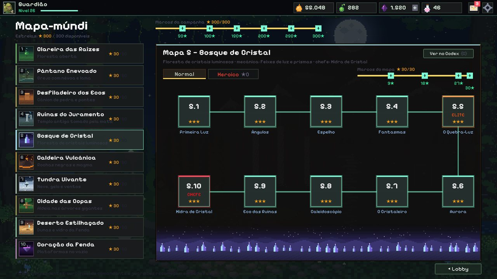
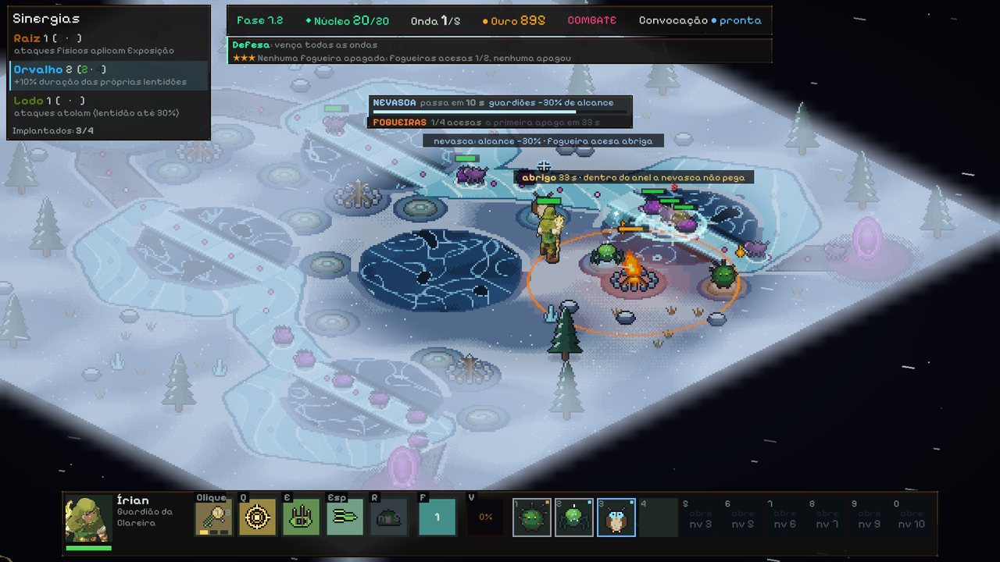
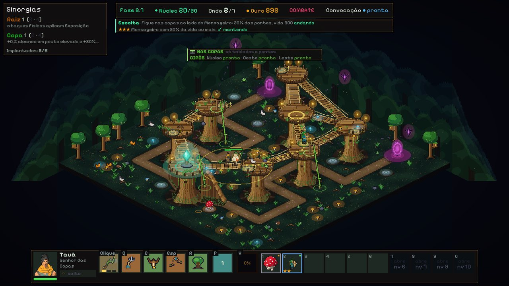
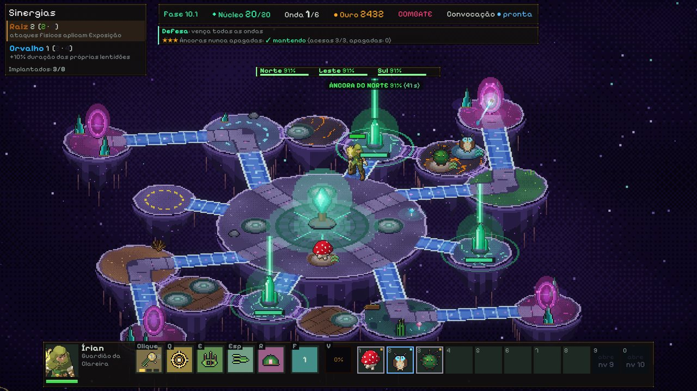
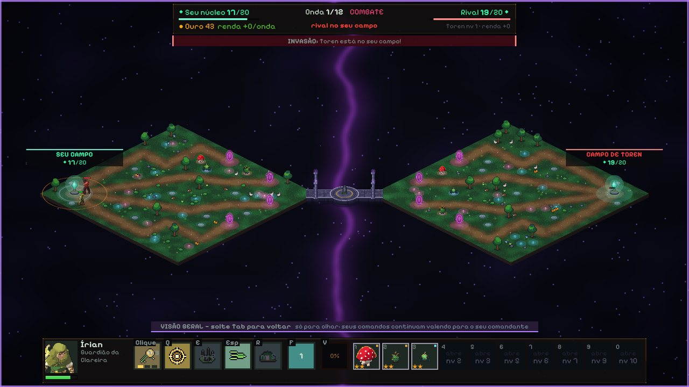
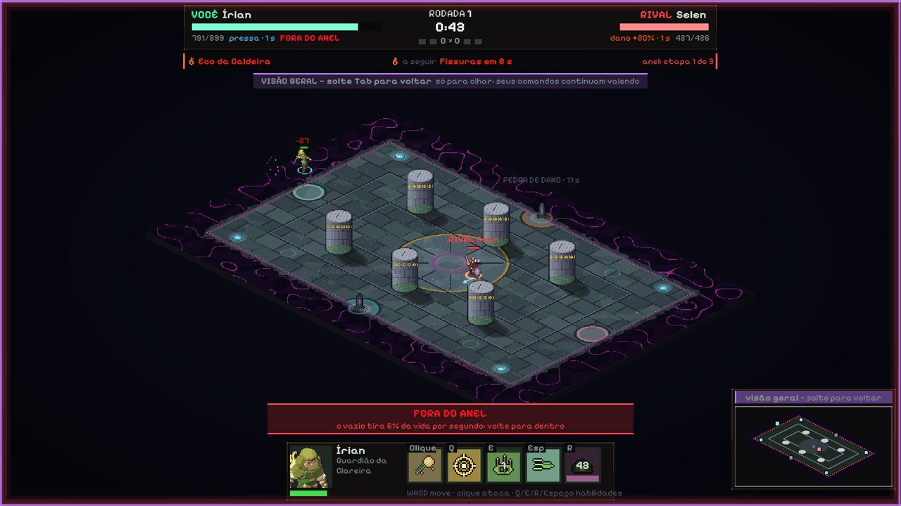

Como jogar
O jogo ensina o básico na primeira fase, com um tutorial que pode ser pulado e revisto nas Configurações. Esta página é um resumo para quem quer saber o que esperar.
A partida
Inimigos saem das fendas e seguem as rotas até o núcleo. Cada um que chega tira integridade dele; se ela zerar, a fase acaba. Você vence segurando todas as ondas.
Uma fase alterna dois momentos:
- Preparação. Compre guardiões na loja, arraste-os da reserva para os postos ao lado da rota, compre XP para subir o nível do comandante e leia a placa do portal, que mostra quem vem e por onde.
- Combate. Ande com o comandante, mire com o mouse, ataque e use as habilidades. Os guardiões atacam sozinhos.
| Ação | Controle |
|---|---|
| Mover o comandante | W A S D |
| Mirar e atacar | Mouse (segure o botão para atirar) |
| Iniciar a onda | Enter |
| Convocar um guardião | F |
| Abrir o Codex | C |
| Menu e pausa | Esc |
As teclas das habilidades aparecem na barra do comandante, dentro do jogo.
Comandantes
O comandante é o herói que você controla. São dez — Írian, Maíra, Toren, Ysra, Selen, Sorah, Ivra, Tauã, Dunaí e Vael —, cada um com ataque básico, habilidades, talentos e uma árvore de habilidades próprios. Durante a fase ele sobe de nível com XP comprado: cada nível libera mais postos, raridades melhores na loja e novas habilidades. Depois de certas ondas você escolhe um talento, que muda uma habilidade até o fim da fase.
Se o comandante cair, ele volta sozinho em alguns segundos. Os guardiões seguram a rota enquanto isso.
Guardiões, loja e fusão
- Antes da fase você monta o bando: os 10 guardiões que a loja vai oferecer.
- Guardiões têm raridade, custo, facção e tipo de dano (físico ou mágico). Alguns inimigos resistem a um dos tipos, então vale misturar.
- Fusão: cópias iguais se juntam sozinhas e viram um guardião de nível maior (★★ e depois ★★★).
- Sinergias: guardiões da mesma facção em campo ligam bônus.
- Convocação: com a tecla F, um guardião sai do posto por um tempo e luta ao lado do comandante. O posto fica vazio enquanto isso.
Campanha








- 10 mapas, 100 fases, 10 chefes. Cada mapa traz uma mecânica nova: névoa no pântano, pontes no desfiladeiro, prismas de luz, fissuras de lava, nevasca, dois níveis de altura, portais que mudam de lugar, ilhas que caem.
- Estrelas: vencer dá ★; terminar com o núcleo em 75% ou mais dá ★★; cumprir o bônus da fase dá ★★★.
- Modo Heroico: as mesmas fases com regras extras e mais vida nos inimigos, e o Arsenal (ajudante, torres, armadilhas, conjurações, equipamentos e relíquias) para compensar.
- Funciona sem internet. O que você jogar fica guardado no computador e é enviado ao servidor quando a conexão voltar.
Conta e progresso
Fora das fases você evolui a conta: desbloqueia comandantes e guardiões, sobe o Grau dos guardiões, distribui pontos na árvore de habilidades, cumpre missões e conquistas e consulta o Codex, que explica inimigos e mecânicas que você já encontrou. Todas as moedas do jogo são ganhas jogando. Não existe compra com dinheiro.
PvP online




Os modos online precisam de conta online e de internet.
- Duelo de Fendas: cada jogador defende o próprio campo contra as ondas e pode atravessar a ponte para atacar o campo do rival.
- Arena de Comandantes: os dois comandantes se enfrentam diretamente, em rodadas, numa arena com pilares, pedras-runa e um anel que fecha.
- Fila ou amigos: entre na fila para encontrar um rival ou desafie um amigo. Amigos são adicionados pelo código de amigo, que cada jogador vê na própria tela de amigos e passa para quem quiser.
- Os modos online abrem conforme o nível da conta (o jogo mostra o nível pedido em cada cartão).
- Se a conexão cair, você tem 90 segundos para voltar à partida. Depois disso, conta como abandono.
Pausa por acordo
No PvP ninguém pausa sozinho. Pelo menu (Esc) você pede uma pausa de 1, 5 ou 10 minutos e escolhe um motivo numa lista pronta; o jogo só congela se o rival aceitar. São 2 pausas por partida, somando os dois jogadores, e qualquer um pode voltar antes do tempo.
Emoticons
Segure Ctrl para abrir a roda de emoticons, escolha com o mouse ou as setas e solte para enviar. O emoticon aparece sobre o seu comandante por alguns segundos. Você escolhe até 5 para a sua roda.
Não há conversa por texto nem por voz entre jogadores. A comunicação no jogo é só por emoticons e pelos motivos prontos da pausa.